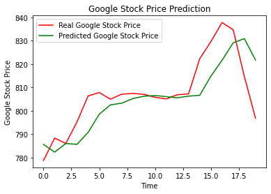
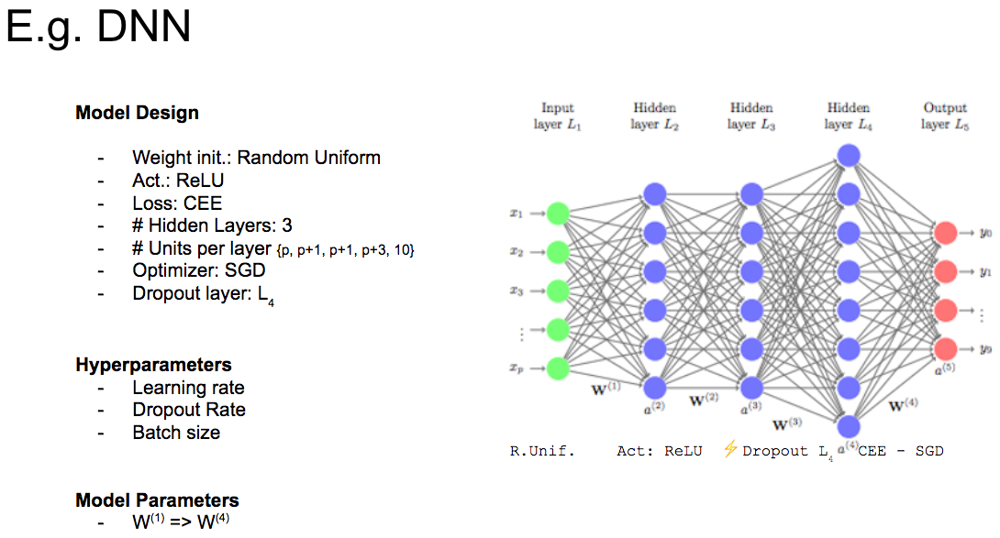
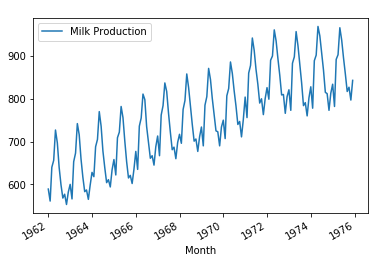

Google Stock Price
Trend Prediction

Training a stacked LSTM model on 2012-2016 open Google stock price data to predict 2017
opening stock price using Recurrent Neural Network stacked LSTM. The dataset is split into
training data with Google stock price from the year 2012-2016 and testing data with stock price in 2017.
BackPropagation & tuning
Hyperparameters

Tuning several hyperparameters and modifying functions. Both functions receive ''a'' (activation) and ''y'' (target output),
which are from one data instance and represented by column vectors.
Fn() returns a scalar, while derivative() returns a column vector
containing the cost derivative for each node in the output layer; no multiplication by the derivative of the activation function.
Implentation of
Neural Networks

Implementing Neural Network on the infamous Irish dataset.
This algorithm evalutes: accuracy, Mean Squared Error (MSE),
Crossentropy and log-likelihood. Followed by that, the function returns those five results that are correctcount, accuracy, MSE, Crossentropy and Loglikelihood in a list.
Milk production prediction
using RNN

The data contains the production of 168 months (14 years). We will use an RNN to predict the last 12 month of 1975 and
compare with the real data. The index as a time series was created by using to_datetime and plot the data for 14 years.
we use sklearn.preprocessing to scale the data using the MinMaxScaler. Remember to only fit_transform (not fit) on the
training data, then transform the test data. Then implement a deeper version of RNN with Long Short Term Memory.
LSTM has feedback connections. It can not only process single data points, but also entire sequences of data.